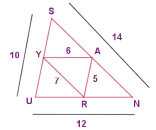
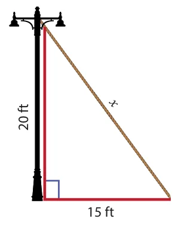

Miscellaneous Practice Problems
- In the figure, given that \(\angle 1 \equiv \angle 2\) and \(\angle 3 \equiv \angle 4\). Prove that \(\triangle MUG \equiv \triangle TUB\).

- From the figure, prove that \(\triangle SUN \sim \triangle RAY\).

- The height of a tower is measured by a mirror on the ground at R by which the top of the tower's reflection is seen. Find the height of the tower. If \(\triangle PQR \sim \triangle STR\)

- Find the length of the support cable required to support the tower with the floor.

- Rithika buys an LED TV which has a 25 inches screen. If its height is 7 inches, how wide is the screen? Her TV cabinet is 20 inches wide. Will the TV fit into the cabinet? Give reason.
Challenging problems
- In the figure, \(\angle TMA \equiv \angle IAM\) and \(\angle TAM \equiv \angle IMA\). \(P\) is the midpoint of \(MI\) and \(N\) is the midpoint of \(AI\). Prove that \(\triangle PIN \sim \triangle ATM\).

- In the figure, if \(\angle FEG \equiv \angle 1\) then, prove that \(DG^{2} = DE.DF\).

- The diagonals of the rhombus is 12 cm and 16 cm. Find its perimeter. (Hint: the diagonals of rhombus bisect each other at right angles).
- In the figure, find AR.

- In \(\triangle DEF\), DN, EO, FM are medians and point P is the centroid. Find the following.
- IF \(DE = 44\), then \(DM = ?\)
- IF \(PD = 12\), then \(PN = ?\)
- If \(DO = 8\), then \(FD = ?\)
- IF \(OE = 36\) then \(EP = ?\)